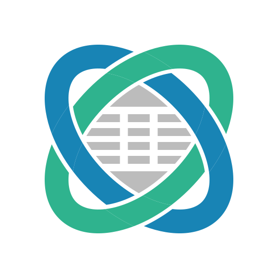
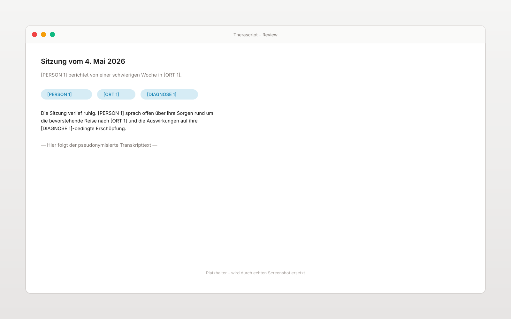
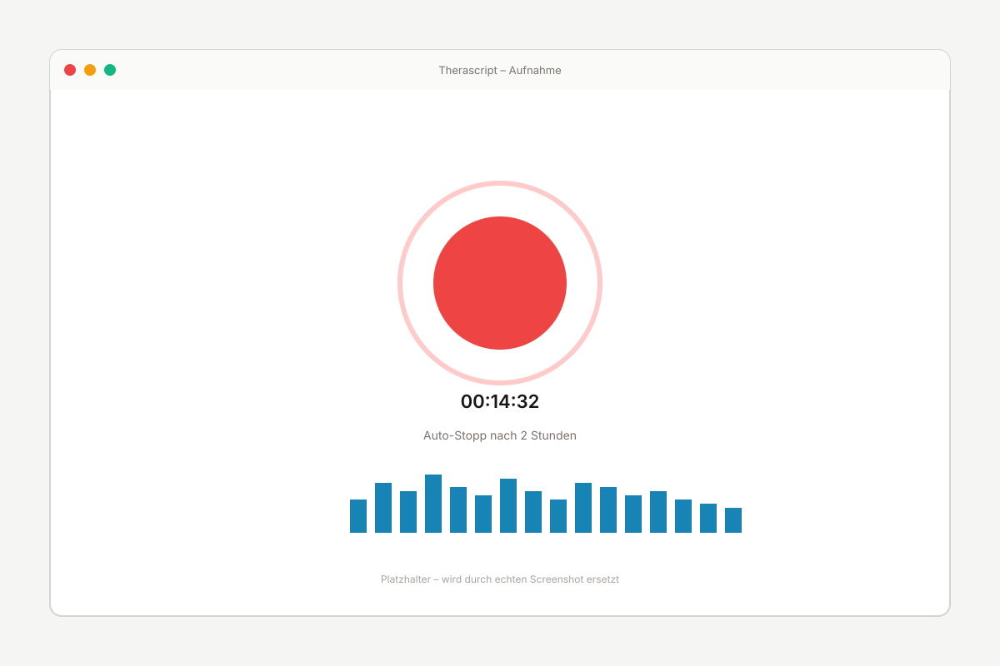
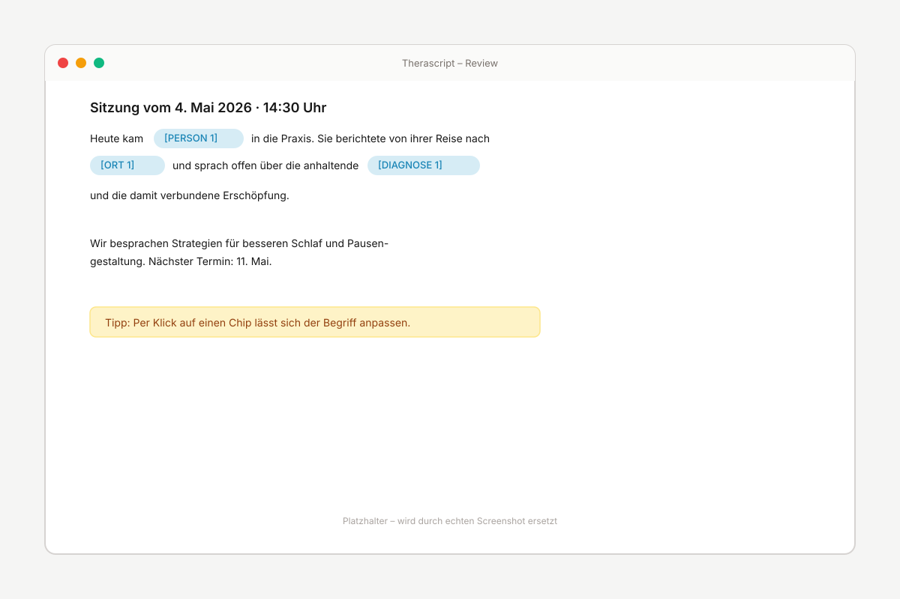
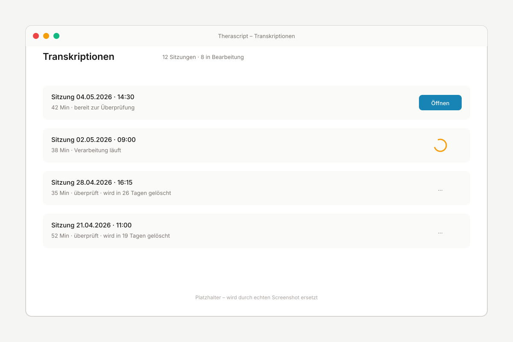
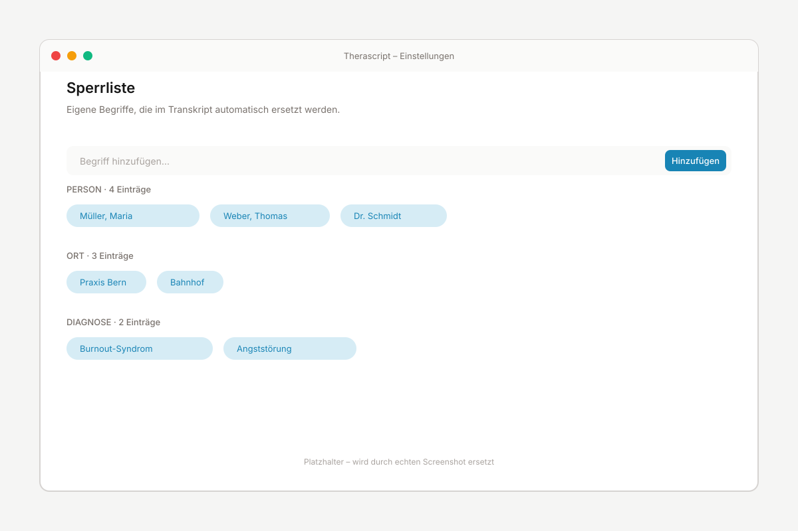
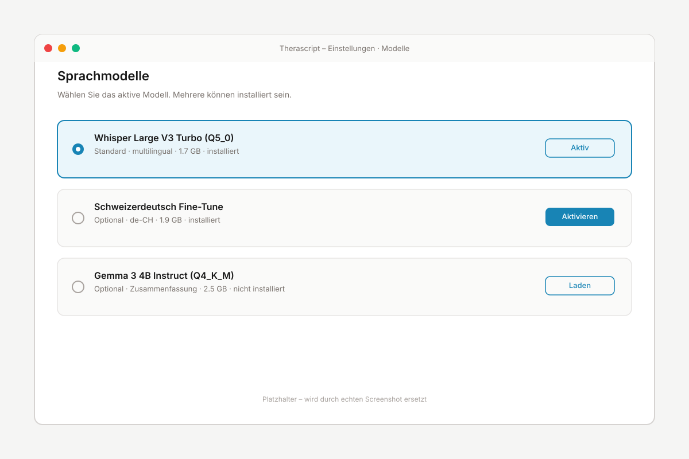

Daten bleiben auf Ihrem Mac
Keine Cloud, kein Online-Konto, keine Drittdienste. TheraScript funktioniert vollständig offline.

TheraScript Auf GitHub ansehenTheraScript transkribiert und pseudonymisiert Therapie-Sitzungen direkt auf Ihrem Mac – ohne Cloud, ohne Account.
Für Mac mit Apple-Silicon-Chip, macOS 26 (Tahoe) oder neuer

Keine Cloud, kein Online-Konto, keine Drittdienste. TheraScript funktioniert vollständig offline.
Hochdeutsch wird sehr gut transkribiert. Schweizerdeutsch funktioniert ordentlich – gelegentliche Korrekturen sind nötig.
Personen, Orte und Diagnosen werden im Transkript durch Platzhalter ersetzt. Eigene Begriffe lassen sich ergänzen.
TheraScript ist Open Source unter MIT-Lizenz. Code und Releases liegen öffentlich auf GitHub.
Ein Klick startet die Aufzeichnung. Der Mikrofon-Pegel ist sichtbar, nach zwei Stunden stoppt sie automatisch.

Pseudonymisierte Begriffe lassen sich per Klick anpassen oder ergänzen.

Alle Aufnahmen chronologisch sortiert. Sitzungen werden nach 30 Tagen automatisch gelöscht.

Personen, Orte, Diagnosen oder Praxis-spezifische Begriffe zur Sperrliste hinzufügen.

Standardmodell oder optional ein Schweizerdeutsch-spezialisiertes Modell.

Sitzungen werden 30 Tage nach Erstellung automatisch gelöscht. Was Sie für die kantonale Aufbewahrungspflicht behalten müssen, exportieren Sie vorher als verschlüsselte Datei.
TheraScript verbindet sich nicht mit dem Internet. Keine Cloud, keine Telemetrie, kein Konto.
Beim ersten Start prüft TheraScript, ob FileVault aktiviert ist – Apples Festplattenverschlüsselung. Falls nicht, erscheint ein Hinweis.
Im Transkript werden echte Namen durch Platzhalter wie [PERSON 1] oder [ORT 1] ersetzt. Die Zuordnung zwischen Platzhalter und Original bleibt lokal auf Ihrem Mac gespeichert – Sie können jederzeit nachschauen, wer mit [PERSON 1] gemeint war. Andere sehen nur die Platzhalter.
Sämtliche Audio-, Transkript- und PDF-Daten werden ausschliesslich lokal auf Ihrem
Mac gespeichert (Standardpfad: ~/.therascript/). TheraScript stellt im
Produktivbetrieb keine ausgehenden Internet-Verbindungen her. Sie können das selbst
verifizieren, indem Sie die Internetverbindung trennen – die App funktioniert
weiterhin.
Im Review-Editor lässt sich der pseudonymisierte Transkripttext mit einem Klick in die Zwischenablage kopieren. Damit können Sie Inhalte in Ihre bestehende Praxis-Software oder ein verschlüsseltes Dokument übernehmen, bevor die Sitzung nach 30 Tagen automatisch entfernt wird.
Für die Transkription kommt standardmässig Whisper Large V3 Turbo zum Einsatz – ein multilinguales Modell, das Hochdeutsch sehr gut versteht. Optional lässt sich ein zusätzliches, auf Schweizerdeutsch spezialisiertes Modell aktivieren. Für die Pseudonymisierung wird ein deutsches Erkennungsmodell von flair verwendet. Alle Modelle laufen lokal.
TheraScript läuft auf Macs mit Apple-Silicon-Chip ab macOS 26 (Tahoe). Ältere macOS-Versionen werden in der aktuellen Version nicht unterstützt, weil die mitgelieferte Metal-GPU-Bibliothek für die Spracherkennung gegen das macOS-26-SDK gebaut wurde. Wir arbeiten daran, die Untergrenze in einer kommenden Version zu senken. Intel-Macs werden nicht unterstützt, weil die Sprachmodelle stark von der Neural Engine und dem einheitlichen Speicher der Apple-Silicon-Chips profitieren.
Nein. TheraScript ist vollständig kostenlos und Open Source unter der MIT-Lizenz. Es gibt keine Bezahl-Version, keine In-App-Käufe und kein Abo-Modell.
Ja. Der vollständige Quellcode ist unter github.com/adbstyle/therascripter einsehbar und kann unabhängig überprüft, kompiliert oder angepasst werden.
Neue Versionen werden als Release auf GitHub veröffentlicht. Sie können entweder die Release-Seite des Projekts besuchen oder die DMG-Datei der jeweils neuesten Version erneut herunterladen und über die bestehende Installation legen. Lokale Daten bleiben erhalten.